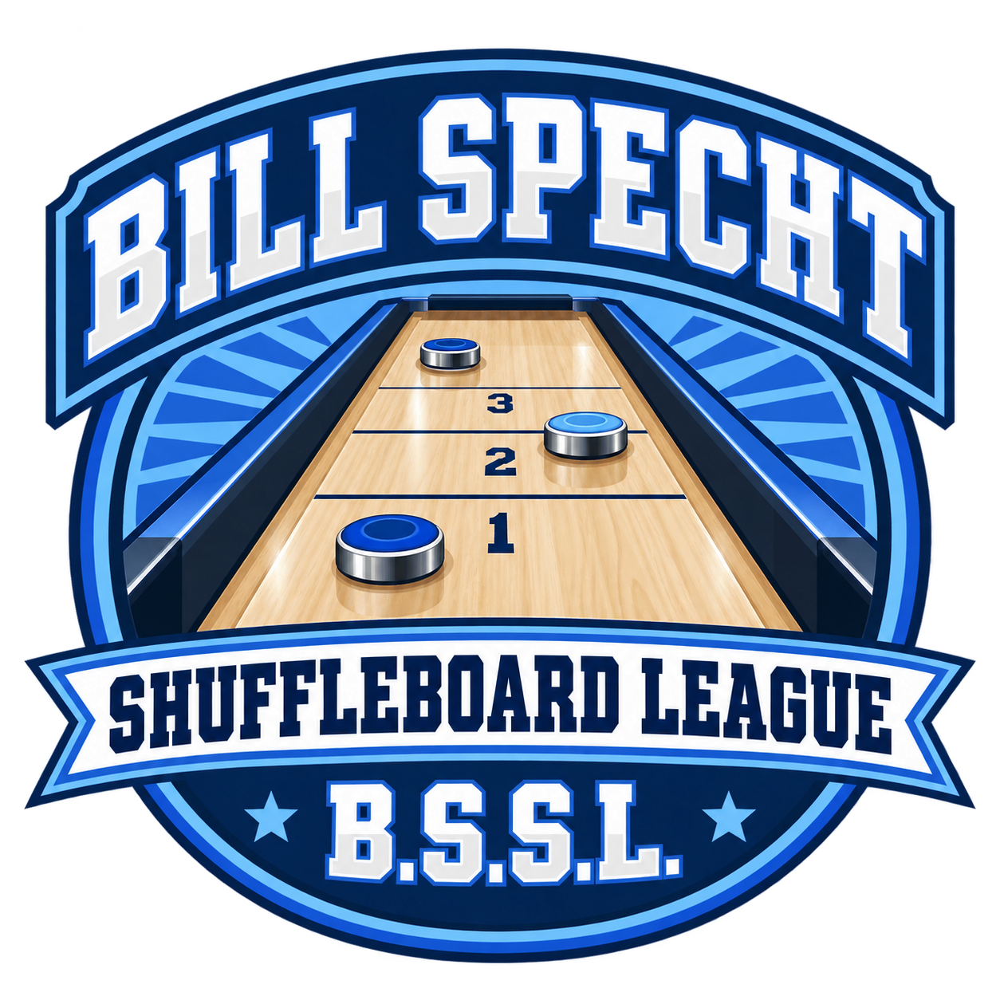

INAUGURAL SEASON / OCTOBER 2026
Bill Specht
Shuffleboard League
"It's going to be Specht-tacular."
Presented by IT/BC Entertainment Group
Michael Bautch & Joe Prusha

THE FIRST SEASON –
YOUR WEEKLY MATCHUPAssigned every MondayFive days to schedule and play with your opponent.
10 PLAYERS / ALL SKILL LEVELSNew to the board? You're in good company.Learn together. Play together. Happy sliding!
01 / THE LEAGUE TABLE
Standings
| Rank | Player | Wins | Losses | Point Differential | Win Percentage |
|---|
Seeds 1–6: quarterfinal byeSeeds 7–10: opening round
Ranked by win percentage, then wins, then point differential. Exact ties use player name for provisional order. Everyone starts at 0–0; current seeds are alphabetical placeholders.
02 / THE ROAD TO BRAGGING RIGHTS
The playoff picture
All 10 players are in. Seeding updates automatically from regular-season standings; the top six receive a first-round bye.
Standings today. Seeds for now. Matchups are projected until the regular season ends. Later rounds show winner paths, with no results assumed.